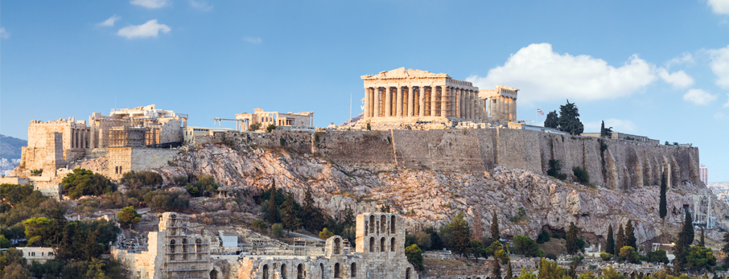
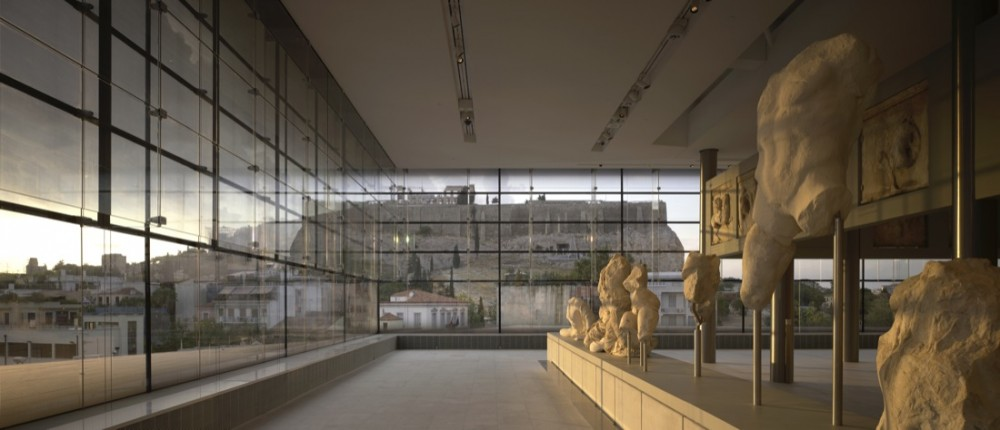
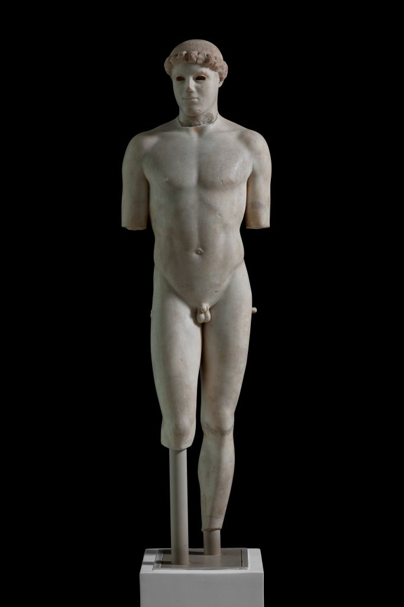

Upon taking my first steps on the streets of Athens, I could already tell I was in a special place. This was where Plato wrote The Republic. This was where Socrates was executed. This has been the core of Greek civilization for over four thousand years. It has been a bastion for art and culture that epitomizes classical antiquity. And I, I had the privilege to experience it all: the history, the art, the culture, and the beauty. Athens was ancient and in beautiful ruins, with a history rooted in culture; that is what made it special. The featured attraction in Athens is the Acropolis. Making the Athenian skyline easily recognizable,
 the Acropolis is center of Athenian ancient history housing the Parthenon, the Propylaia, the Erechtheion and the Temple of Nike. Thus, the acropolis was my tour group’s main destination.
Despite having this incredible cultural opportunity to experience classical antiquity first-hand, our privileged first-world personas overtook the academics in us when the clouds turned gray.
 After a horrible hike up the Acropolis in the unusually rainy Athenian weather, we reached the museum. We complained for a bit, and then entered. We were sent off to explore the art and the history. And when we began to experience the archeological wonders of that museum, we shut up about the weather and enjoyed.
That museum housed some of the most iconic pieces of Greek art, most notably Kritos Boy. While seeing Kritos boy in person was an incredible experience that I have come to cherish as a high-school senior studying interdisciplinary humanities,
 it was not the highlight of my visit to the museum. As I continued to explore I discovered a small exhibit that housed works of art collected from the Sanctuary of Nymphe. The colors with which these works of art were created drew my eye, but my amazement grew with further observation. There was so much to unpack from those seemingly simple pieces. The piece that encapsulated me the most was the Dedication to Nymphe (as shown on the left).
The first element of this piece that really drew me in was the cracks in the clay tablet. While not part of the "art" itself, the cracks exemplify the ancient nature of the work. The knowledge that I am observing a work of art developed greater than three thousand years ago is incredibly encapsulating. As stated earlier the use of color also draws me into this work because the colors that are present in Nymphe works are so far off from the majority of Hellenistic art. Finally, the depiction of nature specific to the Dedication of Nymphe is the most encapsulating component of the piece. Through its depiction this work of art can lend the viewer insights into how the ancient Greeks perceived their relationship with nature. Its combination of birds, doe, and vegetation signifies the Greeks view of a unified natural world. The apparent portrayal of the doe with its fawns further adds to the Greek view of the natural world. Additionally, the movement that is depicted via the galloping does and flying birds serves as evidence of Greek observation of the natural world. The noticeable age of the work, its iconic but alternative colors, and its depiction of nature make it extraordinarily encapsulating.